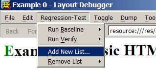
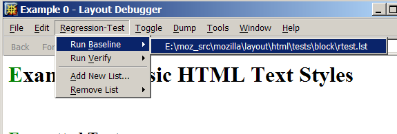
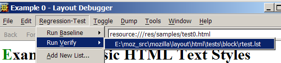

Layout Regression Tests
Subject Overview
Changes in layout, parser and content code can have unintended side effects, also known as regressions. It is good style to check for these unwanted regressions and fixing them before checkin rather than causing bugzilla avalanches.
Prerequisites
In order to run these tests, you will need to have:
- Make sure that your build is a debug build (in short you need
ac_add_options --enable-debugin your.mozconfigfile). - to build the layoutdebugger itself, build either all extensions or include layoutdebug in your
.mozconfigfile. For exampleac_add_options --enable-extensions=all. - a Mozilla tree with the testfiles at
%MOZ_SRC%/layout/html/tests, -
DISABLE_TESTSshould not be defined (soac_add_options --enable-tests), - patience and time.
Test Runs
- Go to the
%MOZ_SRC%/layout/html/tests/blockdirectory. - Avoid the nasty assertions to pop up by
set XPCOM_DEBUG_BREAK=warn, the world would be a much better place if we could first fix those assertions. - As you will probably run your normal Mozilla in parallel with the testing issue then:
set MOZ_NO_REMOTE=1at the command prompt. - Start the layout debugger via
mozilla -layoutdebug - P foowherefoois just another profile than your main profile. - Select from the
Regression-TestMenu theAdd New List...entry.
- Select
%MOZ_SRC%/layout/html/tests/block/rtest.lst. - Execute the baseline test

- Shutdown the layoutdebugger
- Execute
mozilla -layoutdebug - P foo >selftest.txt - Execute the verify test

- Make a note which tests have failed
grep 'failed' selftest.txt(these are false positives, quite frequently they indicate reflow problems, pages showing differently when loaded from cache) - Make your changes to the source, recompile.
- Execute
mozilla -layoutdebug - P foo >outputfile.txt - Execute the verify test
- Make a note which tests have failed
grep 'failed' outputfile.txt - Check how many tests have failed and analyse your results:
- If the regression tests have failed at the same place as the previous diagnosted false positives => ignore
- Try to figure out what the other regressions are: Are they improving the picture or are they regressions?
- Note the difficult to explain testfailures.
- Change the source if necessary until the regression tests indicate that your patch does not hork the block and table layout
- Submit your patch and lists the remaining differences in the bug
Be prepared to cycle.
How the layout regression tests work
First the URL's to test are red from rtest.lst files in various directories. layout/html/tests/block/rtest.lst points to them.
body_col.html body_tbody.html body_tfoot.html body_thead.html col_span.html |
The regression tests compare the frame tree dumps recorded at two different times. The URL's to test are red from rtest.lst
For every file in rtest.lst Mozilla takes the root frame and dumps the whole tree via
nsFrame::DumpRegression.
The frame tree dumps are invoked by the nsILayoutDebugger .
The frame trees are dumped to separate files in a baseline or verify directory for all URL's in rtest.lst (see:
nsRegressionTester::DumpFrameModel) .
Theire name is generated by replacing the old extension .html or .xml with .rgd. For appendCells1.html a file appendCells1.rgd will be created in the baseline or verify subdirectory.
A typical beginning of a dump (*.rgd file) looks like:
<frame va="15022440" type="Viewport(-1)" state="270340" parent="0">
<view va="47171904">
</view>
<stylecontext va="15022232">
<font serif 240 240 0 />
<color data="-16777216"/>
<background data="0 2 3 -1 0 0 "/>
<spacing data="left: Null top: Null right: Null bottom: Null left: Null top: Null right: Null bottom: Null left: 1[0x1]enum top: 1[0x1]enum right: 1[0x1]enum bottom: 1[0x1]enum left: Null top: Null right: Null bottom: Null left: Null top: Null right: Null bottom: Null 1[0x1]enum 0" />
<list data="100 100 " />
<position data="left: Auto top: Auto right: Auto bottom: Auto Auto 0[0x0]tw Null Auto 0[0x0]tw Null 0 Auto " />
<text data="0 0 0 Normal Normal 0[0x0]tw Normal " />
<textreset data="0 10[0xa]enum " />
<display data="0 1 0 0 0 0 0 0 0 0 0 0 " />
<visibility data="0 1 1.000000" />
<table data="0 0 4 -1 1 " />
<tableborder data="1 Null Null 0 2 " />
<content data="0 0 0 Null " />
<quotes data="0 " />
<ui data="3 0 0 1 " />
<uireset data="7 0 4" />
<xul data="0 0 0 0 0 1 <svg data="0 1.000000 1.000000 0 1.000000" />
</stylecontext>
The baseline log will look like:
Type Manifest File: e:\moz_src\mozilla\obj-i586-pc-msvc\dist\bin\components\xpti.dat +++ JavaScript debugging hooks installed. ++WEBSHELL == 1 ++DOMWINDOW == 1 ++WEBSHELL == 2 ++DOMWINDOW == 2 Note: styleverifytree is disabled Note: frameverifytree is disabled Note: verifyreflow is disabled ++WEBSHELL == 3 ++DOMWINDOW == 3 Running baseline test for E:\moz_src\mozilla\layout\html\tests\block\rtest.lst. Writing regression data to E:\moz_src\mozilla\layout\html\tests\block\base\baseline\width-fixed_html.rgd Writing regression data to E:\moz_src\mozilla\layout\html\tests\block\base\baseline\width-percent_html.rgd Writing regression data to E:\moz_src\mozilla\layout\html\tests\block\base\baseline\margin1_html.rgd Writing regression data to E:\moz_src\mozilla\layout\html\tests\block\base\baseline\pre_html.rgd Writing regression data to E:\moz_src\mozilla\layout\html\tests\block\base\baseline\pre1_html.rgd
The second verify run creates first the frame dumps in the verify subdirectories (verify) and compares each frame dump with the corresponding reference frame dump. If they differ in critical points the test fails.
A typical part of the verify log would look like:
Type Manifest File: e:\moz_src\mozilla\obj-i586-pc-msvc\dist\bin\components\xpti.dat +++ JavaScript debugging hooks installed. ++WEBSHELL == 1 ++DOMWINDOW == 1 ++WEBSHELL == 2 ++DOMWINDOW == 2 Note: styleverifytree is disabled Note: frameverifytree is disabled Note: verifyreflow is disabled ++WEBSHELL == 3 ++DOMWINDOW == 3 Running verify test for E:\moz_src\mozilla\layout\html\tests\block\rtest.lst. Writing regression data to E:\moz_src\mozilla\layout\html\tests\table\core\verify\standards1.rgd Comparing to regression data from E:\moz_src\mozilla\layout\html\tests\table\core\baseline\standards1.rgd frame bbox mismatch: 0,26437,4824,600 vs. 0,26437,4872,600 Node 1: TableOuter(table)(144) 0x10004 0,26437,4824,600, |null attr|-16777216|left: 0[0x0]tw top: 0[0x0]tw right: 0[0x0]tw bottom: 0[0x0]tw left: 0[0x0]tw top: 0[0x0]tw right: 0[0x0]tw bottom: 0[0x0]tw left: 1[0x1]enum top: 1[0x1]enum right: 1[0x1]enum bottom: 1[0x1]enum left: Null top: Null right: Null bottom: Null left: Null top: Null right: Null bottom: Null 1[0x1]enum 0|1 1 [none]|left: Auto top: Auto right: Auto bottom: Auto Auto 0[0x0]tw Null Auto 0[0x0]tw Null 0 Auto |0 0 0 Normal Normal 0[0x0]tw Normal |0 8 1,000000 0 0 0 0 0 0 0 0 0 0 0 [none]|0 0 0 -1 1 |0 0 0 Null Node 2: TableOuter(table)(144) 0x10004 0,26437,4872,600, |null attr|-16777216|left: 0[0x0]tw top: 0[0x0]tw right: 0[0x0]tw bottom: 0[0x0]tw left: 0[0x0]tw top: 0[0x0]tw right: 0[0x0]tw bottom: 0[0x0]tw left: 1[0x1]enum top: 1[0x1]enum right: 1[0x1]enum bottom: 1[0x1]enum left: Null top: Null right: Null bottom: Null left: Null top: Null right: Null bottom: Null 1[0x1]enum 0|1 1 [none]|left: Auto top: Auto right: Auto bottom: Auto Auto 0[0x0]tw Null Auto 0[0x0]tw Null 0 Auto |0 0 0 Normal Normal 0[0x0]tw Normal |0 8 1,000000 0 0 0 0 0 0 0 0 0 0 0 [none]|0 0 0 -1 1 |0 0 0 Null frame bbox mismatch: 0,0,4824,600 vs. 0,0,4872,600 Node 1: Table(table)(144) 0x10004 0,0,4824,600, |null attr|-16777216|left: Null top: 0[0x0]tw right: Null bottom: 0[0x0]tw left: Null top: Null right: Null bottom: Null left: 1[0x1]enum top: 1[0x1]enum right: 1[0x1]enum bottom: 1[0x1]enum left: Null top: Null right: Null bottom: Null left: Null top: Null right: Null bottom: Null 1[0x1]enum 0|1 1 [none]|left: Auto top: Auto right: Auto bottom: Auto Auto 0[0x0]tw Null Auto 0[0x0]tw Null 2 Auto |0 0 0 Normal Normal 0[0x0]tw Normal |0 8 1,000000 0 0 0 0 0 0 0 0 0 0 0 [none]|0 0 0 -1 1 |0 0 0 Null Node 2: Table(table)(144) 0x10004 0,0,4872,600, |null attr|-16777216|left: Null top: 0[0x0]tw right: Null bottom: 0[0x0]tw left: Null top: Null right: Null bottom: Null left: 1[0x1]enum top: 1[0x1]enum right: 1[0x1]enum bottom: 1[0x1]enum left: Null top: Null right: Null bottom: Null left: Null top: Null right: Null bottom: Null 1[0x1]enum 0|1 1 [none]|left: Auto top: Auto right: Auto bottom: Auto Auto 0[0x0]tw Null Auto 0[0x0]tw Null 2 Auto |0 0 0 Normal Normal 0[0x0]tw Normal |0 8 1,000000 0 0 0 0 0 0 0 0 0 0 0 [none]|0 0 0 -1 1 |0 0 0 Null frame bbox mismatch: 24,24,4776,552 vs. 24,24,4824,552 Node 1: TableColGroup(table)(144) 0x80010004 24,24,4776,552, |null attr|-16777216|left: Null top: Null right: Null bottom: Null left: Null top: Null right: Null bottom: Null left: 1[0x1]enum top: 1[0x1]enum right: 1[0x1]enum bottom: 1[0x1]enum left: Null top: Null right: Null bottom: Null left: Null top: Null right: Null bottom: Null 1[0x1]enum 0|1 1 [none]|left: Auto top: Auto right: Auto bottom: Auto Auto 0[0x0]tw Null Auto 0[0x0]tw Null 0 Auto |0 0 0 Normal Normal 0[0x0]tw Normal |0 12 1,000000 0 0 0 0 0 0 0 0 0 0 0 [none]|0 0 0 -1 1 |0 0 0 Null Node 2: TableColGroup(table)(144) 0x80010004 24,24,4824,552, |null attr|-16777216|left: Null top: Null right: Null bottom: Null left: Null top: Null right: Null bottom: Null left: 1[0x1]enum top: 1[0x1]enum right: 1[0x1]enum bottom: 1[0x1]enum left: Null top: Null right: Null bottom: Null left: Null top: Null right: Null bottom: Null 1[0x1]enum 0|1 1 [none]|left: Auto top: Auto right: Auto bottom: Auto Auto 0[0x0]tw Null Auto 0[0x0]tw Null 0 Auto |0 0 0 Normal Normal 0[0x0]tw Normal |0 12 1,000000 0 0 0 0 0 0 0 0 0 0 0 [none]|0 0 0 -1 1 |0 0 0 Null frame bbox mismatch: 0,0,2400,552 vs. 0,0,2424,552 Node 1: TableCol(table)(144) 0x30010004 0,0,2400,552, |null attr|-16777216|left: Null top: Null right: Null bottom: Null left: Null top: Null right: Null bottom: Null left: 1[0x1]enum top: 1[0x1]enum right: 1[0x1]enum bottom: 1[0x1]enum left: Null top: Null right: Null bottom: Null left: Null top: Null right: Null bottom: Null 1[0x1]enum 0|1 1 [none]|left: Auto top: Auto right: Auto bottom: Auto Auto 0[0x0]tw Null Auto 0[0x0]tw Null 0 Auto |0 0 0 Normal Normal 0[0x0]tw Normal |0 11 1,000000 0 0 0 0 0 0 0 0 0 0 0 [none]|0 0 0 -1 1 |0 0 0 Null Node 2: TableCol(table)(144) 0x30010004 0,0,2424,552, |null attr|-16777216|left: Null top: Null right: Null bottom: Null left: Null top: Null right: Null bottom: Null left: 1[0x1]enum top: 1[0x1]enum right: 1[0x1]enum bottom: 1[0x1]enum left: Null top: Null right: Null bottom: Null left: Null top: Null right: Null bottom: Null 1[0x1]enum 0|1 1 [none]|left: Auto top: Auto right: Auto bottom: Auto Auto 0[0x0]tw Null Auto 0[0x0]tw Null 0 Auto |0 0 0 Normal Normal 0[0x0]tw Normal |0 11 1,000000 0 0 0 0 0 0 0 0 0 0 0 [none]|0 0 0 -1 1 |0 0 0 Null frame bbox mismatch: 2424,0,2352,552 vs. 2448,0,2376,552 Node 1: TableCol(table)(144) 0x30010004 2424,0,2352,552, |null attr|-16777216|left: Null top: Null right: Null bottom: Null left: Null top: Null right: Null bottom: Null left: 1[0x1]enum top: 1[0x1]enum right: 1[0x1]enum bottom: 1[0x1]enum left: Null top: Null right: Null bottom: Null left: Null top: Null right: Null bottom: Null 1[0x1]enum 0|1 1 [none]|left: Auto top: Auto right: Auto bottom: Auto Auto 0[0x0]tw Null Auto 0[0x0]tw Null 0 Auto |0 0 0 Normal Normal 0[0x0]tw Normal |0 11 1,000000 0 0 0 0 0 0 0 0 0 0 0 [none]|0 0 0 -1 1 |0 0 0 Null Node 2: TableCol(table)(144) 0x30010004 2448,0,2376,552, |null attr|-16777216|left: Null top: Null right: Null bottom: Null left: Null top: Null right: Null bottom: Null left: 1[0x1]enum top: 1[0x1]enum right: 1[0x1]enum bottom: 1[0x1]enum left: Null top: Null right: Null bottom: Null left: Null top: Null right: Null bottom: Null 1[0x1]enum 0|1 1 [none]|left: Auto top: Auto right: Auto bottom: Auto Auto 0[0x0]tw Null Auto 0[0x0]tw Null 0 Auto |0 0 0 Normal Normal 0[0x0]tw Normal |0 11 1,000000 0 0 0 0 0 0 0 0 0 0 0 [none]|0 0 0 -1 1 |0 0 0 Null Comparison for file:///E:/moz_src/mozilla/layout/html/tests/table/core/baseline/standards1.rgd failed.
The first regression test has failed and it is marked so.
Adding new regression tests
Once you have checked in the code:
- please add your testcase for the bug to the regression tests.
- A testcase should only contain local files.
- Place the images in
table/imagesblock/imagesor (don't forgetcvs commit -kb) - and the testfile in the
table/bugsorblock/bugsdirectory. - Update the
rtest.lstfile in the corresponding directory in order to include your file.
Additional Notes
There is a special type of frame dumps - the printing regression tests, they are invoked by the -Prt command line argument to the viewer and include first a display then a frame dump taking into account the printer pages. Please contact if you need help with running those tests.
I would like to thank Chris Karnaze for his guidance and fantasai for her language support.